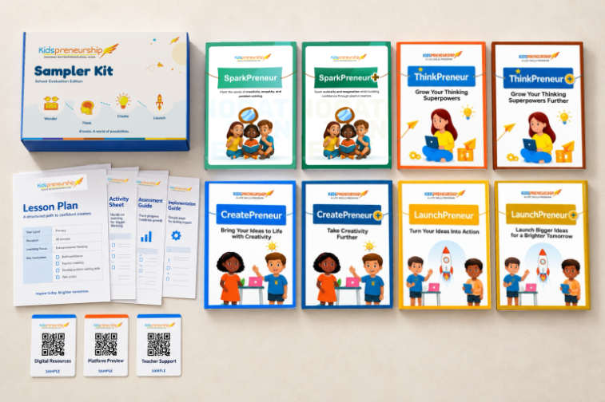
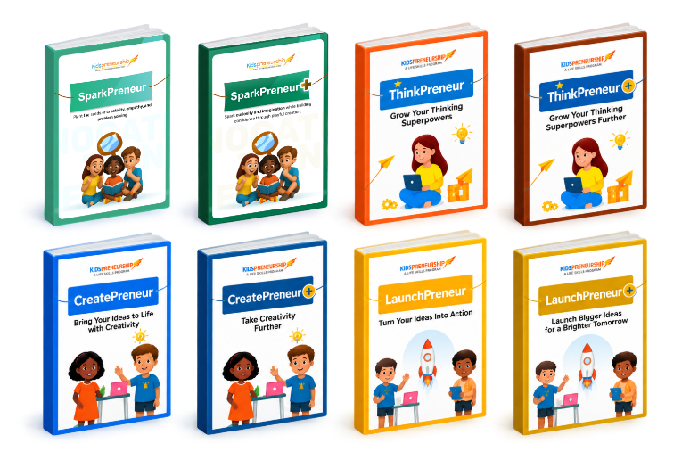

What would you do if your group couldn't agree?
Resolution • Listening to both sides
Exercise →
Leadership isn't simply being the person in charge.
It can mean taking initiative, listening well, making thoughtful decisions, helping others, taking responsibility and contributing positively to a team.

An illustrated progression designed to guide children through eight reflective stages of personal awareness and collective contribution.
Recognise personal strengths and values.
Understand other people and perspectives.
Share ideas clearly and respectfully.
Think through choices and consequences.
Work effectively with others.
Notice what needs to be done and act.
Respond constructively when things don't go to plan.
Understand how your actions affect others.
The journal uses relatable prompts and scenarios such as:
A broader understanding of leadership:
“How can I positively influence what happens around me?”
“How can I be in charge?”
A complete, printable digital activity workbook designed for self-guided learning at home or in class.

Deepen their creative confidence and community impact with companion workbooks from the series.
Helps children unlock lateral thinking, playful invention, and the courage to experiment without fear of imperfection.
Connects personal leadership to real-world community action through structured empathy mapping and volunteer projects.